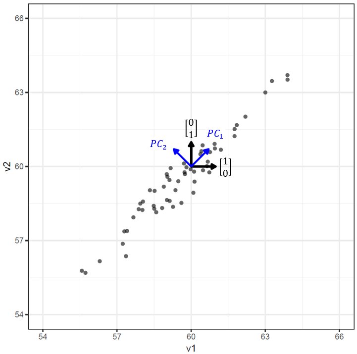
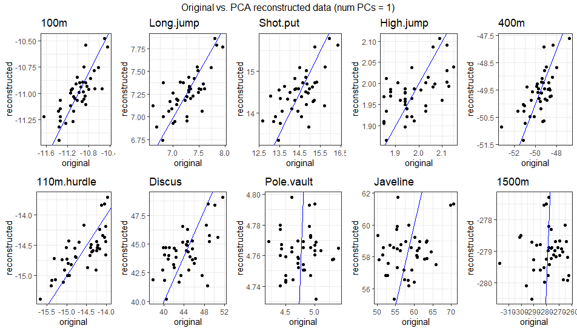

Introduction to Dimensionality Reduction
Foundational lesson for Dimensionality Reduction Module
Keywords
Dimensionality reduction, vectors, matrices, PCA, factor analysis, UMAP.
Lesson’s Level
The level of this lesson is categorised as SILVER.
Lesson’s Main Idea
- Knowing the basic concepts underlying dimensionality reduction.
- Knowing how to implement common dimensionality reduction methods.
- Knowing how to interpret results of dimensionality reduction algorithms.
1 Learning Outcomes
By the end of this lesson, you will be proficient in:
Basic linear algebra concepts that relate to dimensionality reduction.
Principal Component Analysis (PCA).
Factor Analysis (FA).
As well as have some familiarity with non-linear dimensionality reduction methods.
2 Background knowledge
Some background knowledge of vectors, matrices, and basic linear algebra is needed in order to understand many of the most common dimensionality reduction techniques such as PCA. This section of the tutorial aims to introduce these concepts in a (mostly) non-technical way.
2.0.1 What is the “dimensionality” of a dataset?
The dimensionality of a dataset refers to the number of values (or variables) used to describe each object, or observation within that dataset. For example, a dataset comprising strength testing results from the squat, bench press, and deadlift for a group of athletes has dimensionality = 3 because each observation is described by 3 values. A dataset composed of 64 x 64 pixel grayscale images has dimensionality = 4096 because each image is described by 64 x 64 = 4096 pixel intensity values.
2.0.2 Observations as vectors
It is useful to think of observations within a dataset as vectors. A vector is a mathematical object with a magnitude and direction. Using the same example data as above; the observation of an athlete that lifted 150kg in the squat, 100kg in the bench press, and 200kg in the deadlift can be thought of as a 3-dimensional vector describing the point \(\bigl[\begin{smallmatrix} 150 \\ 100 \\ 200 \end{smallmatrix} \bigr]\) in 3-dimensional space that can be reached by going:
- 150 units in the “direction” of squat.
- 100 units in the “direction” of bench press.
- 200 units in the “direction” of deadlift.
This concept is visually intuitive to us in up-to 3 dimensions, but still applies in higher dimensions. For example, if five more strength tests were added to our dataset then each observation would be described by an 8-dimensional vector. Or if our dataset contained force-plate time series measurements from countermovement jumps normalised to 1000 time points, then each observation would be a 1000-dimensional vector.
2.0.3 Basis vectors
When descibing the location of our observation at \(\bigl[\begin{smallmatrix} 150 \\ 100 \\ 200 \end{smallmatrix} \bigr]\) before, it was implicit that we were using the standard basis vectors for a 3-dimensional space. These are:
\[ \left\{ \mathbf{i} = \begin{bmatrix} 1\\ 0\\ 0 \end{bmatrix} , \mathbf{j} = \begin{bmatrix} 0\\ 1\\ 0 \end{bmatrix} , \mathbf{k} = \begin{bmatrix} 0\\ 0\\ 1 \end{bmatrix} \right\} \]
A basis vector is like a building block for describing points in space. We can combine these basis vectors in different amounts to reach any point in our space. They give us a way to break down complex positions into simpler parts. For our observation, using the standard basis vectors, this is shown below:
\[ \begin{split} \begin{bmatrix} 150\\ 100\\ 200 \end{bmatrix} &= 150 \cdot \mathbf{i} + 100 \cdot \mathbf{j} + 200 \cdot \mathbf{k} \\ &= 150 \cdot \begin{bmatrix} 1\\ 0\\ 0 \end{bmatrix} + 100 \cdot \begin{bmatrix} 0\\ 1\\ 0 \end{bmatrix} + 200 \cdot \begin{bmatrix} 0\\ 0\\ 1 \end{bmatrix} \end{split} \]
However, the standard basis is not the only possible set of basis vectors. The are many other possible ways to give instructions on how to reach locations in a 3D space. For example the following three vectors also form a basis for 3D space.
\[ \left\{ \mathbf{u} = \begin{bmatrix} 3\\ 1\\ 1 \end{bmatrix} , \mathbf{v} = \begin{bmatrix} -1\\ 2\\ 1 \end{bmatrix} , \mathbf{w} = \begin{bmatrix} -1/2\\ -2\\ 7/2 \end{bmatrix} \right\} \]
Using these basis vectors our observation from before would be described by the vector:
\[ \begin{bmatrix} 750/11\\ 125/3\\ 850/33 \end{bmatrix} \]
because
\[ \begin{split} \frac{750}{11} \cdot \mathbf{u} + \frac{125}{3} \cdot \mathbf{v} + \frac{850}{33} \cdot \mathbf{w} &= \frac{750}{11} \cdot \begin{bmatrix} 3\\ 1\\ 1 \end{bmatrix} + \frac{125}{3} \cdot \begin{bmatrix} -1\\ 2\\ 1 \end{bmatrix} + \frac{850}{33} \cdot \begin{bmatrix} -1/2\\ -2\\ 7/2 \end{bmatrix} \\ &= \begin{bmatrix} \frac{750}{11}\times3-\frac{125}{3} - \frac{850}{33}\times\frac{1}{2}\\ \frac{750}{11}+\frac{125}{3}\times2 - \frac{850}{33}\times2\\ \frac{750}{11}+\frac{125}{3} + \frac{850}{33}\times\frac{7}{2} \end{bmatrix} \\ &= \begin{bmatrix} 150\\ 100\\ 200 \end{bmatrix} \end{split} \]
So the original information is preserved after the change of basis vectors, however the values that describe the data point are different if we view the dataset from the perspective of the different basis vectors. A change of basis operation is a transformation that allows us to express vectors in a new coordinate system. It’s like changing the perspective from which we view the vectors, while keeping their underlying meaning intact.
It may not be immediately clear why using anything other than the standard basis vectors may be useful, but the concept of a basis transformation is central to many dimensionality reduction techniques.
2.0.4 Datasets as matrices
After making the connection between observations and vectors, it is also necessary to make the link between datasets and matrices. Consider the following simulated dataset of strength testing results, containing the observation at \(\bigl[\begin{smallmatrix} 150 \\ 100 \\ 200 \end{smallmatrix} \bigr]\) in the first row.
| ID | Squat | Bench | Deadlift |
|---|---|---|---|
| Athlete_1 | 150 | 100 | 200 |
| Athlete_2 | 127 | 95 | 124 |
| Athlete_3 | 99 | 63 | 241 |
| Athlete_4 | 155 | 101 | 195 |
| Athlete_5 | 143 | 110 | 272 |
| Athlete_6 | 121 | 55 | 162 |
| Athlete_7 | 174 | 84 | 237 |
| Athlete_8 | 116 | 100 | 177 |
| Athlete_9 | 152 | 90 | 150 |
| Athlete_10 | 117 | 94 | 220 |
This dataset has 10 observations (rows) and dimensionality = 3 because each observation is described by 3 values (meta-data such as ID or date variables are not included in the dimensionality). Thus it can be represented by a \(10 \times 3\) matrix (\(\mathcal{D}\)). A data matrix is a two-dimensional arrangement of numbers, where rows represent individual observations or samples, and columns represent different variables or features.
\[ \mathcal{D} = \begin{bmatrix} 150 & 100 & 200 \\ 127 & 95 & 124 \\ 99 & 63 & 241 \\ 155 & 101 & 195 \\ 143 & 110 & 272 \\ 121 & 55 & 162 \\ 174 & 84 & 237 \\ 116 & 100 & 177 \\ 152 & 90 & 150 \\ 117 & 94 & 220 \\ \end{bmatrix} \]
This matrix representation makes it easy to perform various mathematical operations and analyses on the dataset, such as matrix multiplication, linear algebra operations, and statistical computations. It’s a fundamental way of organising and analysing data, especially in fields such as machine learning and data science.
When discussing dimensionality reduction it is also illustrative to show the basis vectors in another matrix, where each row contains one of the basis vectors (this matrix will be of size \(N \times N\) where \(N\) is the dimensionality of the data). The dataset is constructed by multiplying the two matrices. Below is the dataset expressed using the standard basis vectors (shown in blue, red, and green):
\[ \mathcal{D} = \begin{bmatrix} \textit{150} & \textit{100} & \textit{200} \\ 127 & 95 & 124 \\ 99 & 63 & 241 \\ 155 & 101 & 195 \\ 143 & 110 & 272 \\ 121 & 55 & 162 \\ 174 & 84 & 237 \\ 116 & 100 & 177 \\ 152 & 90 & 150 \\ 117 & 94 & 220 \\ \end{bmatrix} \times \begin{bmatrix} \textcolor{blue}{1} & \textcolor{blue}{0} & \textcolor{blue}{0} \\ \textcolor{red}{0} & \textcolor{red}{1} & \textcolor{red}{0} \\ \textcolor{green}{0} & \textcolor{green}{0} & \textcolor{green}{1} \end{bmatrix} \]
However, as shown in the preceding sections, it is possible to express the data with respect to a different set of basis vectors. The same strength testing dataset is shown below, but using a different set of basis vectors:
\[ \mathcal{D} = \begin{bmatrix} \textit{750/11} & \textit{125/3} & \textit{850/33} \\ 600/11 & 187/6 & 361/33 \\ ... & ... & ... \\ & & \\ & & \\ & & \\ & & \\ ... & ... & ... \\ & & \\ 665/11 & 97/2 & 349/11 \\ \end{bmatrix} \times \begin{bmatrix} \textcolor{blue}{3} & \textcolor{blue}{1} & \textcolor{blue}{1} \\ \textcolor{red}{-1} & \textcolor{red}{2} & \textcolor{red}{1} \\ \textcolor{green}{-1/2} & \textcolor{green}{-2} & \textcolor{green}{-7/2} \end{bmatrix} \]
In the example above the non-standard basis vectors used did not have any relevance to the data, so the change of basis did not accomplish anything particularly useful. However, it is sometimes possible to construct new basis vectors that greatly simplify how the dataset can be represented.
3 Dimensionality reduction methods
Dimensionality reduction techniques seek to find new coordinate systems for expressing data. With the goal of being able to capture as much of the information and structure in the data as possible using fewer values per observation, thus lowering the dimensionality. There are many different ways to accomplish this. The following sections aim to explain the concepts behind common dimensionality reduction techniques (PCA, Factor Analysis, and UMAP). Provide example code showing to implement these methods in R, as well as instruction on how to run diagnostics, visualisations, and how to interpret dimensionality reduction results.
3.1 Principal Component Analysis (PCA)
Principal component analysis (PCA) is a method for finding a new coordinate system to express data, this is equivalent to finding a new set of basis vectors. Specifically the PCA algorithm constructs the first basis vector to point in the direction of maximal variation in the data, then the second in the direction of maximal variation with the constraint that it must be uncorrelated with the first, and so on (see REFXXX for the full details).
The concept of aligning the new basis vectors with the variation present in the data can be visualised clearly in 2-dimensions. In the figure below the raw data and standard basis vectors are shown in black, and the principal components (new basis vectors) are shown in blue. Loosely speaking, using the standard basis vectors on this dataset is like giving instructions in the form of “X steps to the right/left and Y steps up/down” whereas using the principal components is like instructions of the form, “P steps along the positive diagonal and Q steps along the negative diagonal”. It should be evident from the graph that because of the strong correlation between these two variables just giving the value of an observation along the \(PC_1\) direction (i.e. in 1-dimension) will allow us to know approximately where it is in 2-dimensions. This is the benefit of aligning the basis vectors with the direction of maximal variation, it can allow us to describe the location of the observations with fewer values - thus reducing the dimensionality of the data.

There are no assumptions or requirements a dataset needs to meet before running PCA, however there is also no guarantee that the new coordinate system (basis vectors) will provide a useful or enlightening view of the data. As such PCA should be considered a mostly exploratory analysis technique, particularly useful for visualising high dimensional data, or as a pre-processing step for further analysis. It does not have an underlying model of how the data is generated (Jolliffe 2005).
3.1.1 Decathlon Data
To work through how to perform PCA in R we will use a decathlon results dataset available through the FactoMineR package.
A data frame with 41 rows and 13 columns: the first ten columns corresponds to the performance of the athletes for the 10 events of the decathlon. The columns 11 and 12 correspond respectively to the rank and the points obtained. The last column is a categorical variable corresponding to the sporting event (2004 Olympic Game or 2004 Decastar).
library(FactoMineR)
data(decathlon)
gt(head(decathlon[, 1:10]))| 100m | Long.jump | Shot.put | High.jump | 400m | 110m.hurdle | Discus | Pole.vault | Javeline | 1500m |
|---|---|---|---|---|---|---|---|---|---|
| 11.04 | 7.58 | 14.83 | 2.07 | 49.81 | 14.69 | 43.75 | 5.02 | 63.19 | 291.7 |
| 10.76 | 7.40 | 14.26 | 1.86 | 49.37 | 14.05 | 50.72 | 4.92 | 60.15 | 301.5 |
| 11.02 | 7.30 | 14.77 | 2.04 | 48.37 | 14.09 | 48.95 | 4.92 | 50.31 | 300.2 |
| 11.02 | 7.23 | 14.25 | 1.92 | 48.93 | 14.99 | 40.87 | 5.32 | 62.77 | 280.1 |
| 11.34 | 7.09 | 15.19 | 2.10 | 50.42 | 15.31 | 46.26 | 4.72 | 63.44 | 276.4 |
| 11.11 | 7.60 | 14.31 | 1.98 | 48.68 | 14.23 | 41.10 | 4.92 | 51.77 | 278.1 |
As a pre-processing step we will convert the time-based results (100m, 400m, 1500m, and 110m hurdles) to negative values. This is to ensure that for all variables a higher number corresponds to better performance, and therefore positive correlations between variables indicate that athletes that do well in one of those events tend to do well in the other.
dec_events <- decathlon %>%
select(`100m`:`1500m`) %>% # select only the first 10 columns that contain the event results
mutate(
`100m` = -`100m`,
`400m` = -`400m`,
`1500m` = -`1500m`,
`110m.hurdle` = -`110m.hurdle`
)In matrix notation the processed dataset looks like this:
\[ \begin{bmatrix} -11.04 & 7.58 & 14.83 & 2.07 & -49.81 & -14.69 & 43.75 & 5.02 & 63.19 & -291.7 \\ -10.76 & 7.4 & 14.26 & 1.86 & -49.37 & -14.05 & 50.72 & 4.92 & 60.15 & -301.5 \\ -11.02 & 7.3 & 14.77 & 2.04 & -48.37 & -14.09 & 48.95 & 4.92 & 50.31 & -300.2 \\ -11.02 & 7.23 & 14.25 & 1.92 & -48.93 & -14.99 & 40.87 & 5.32 & 62.77 & -280.1 \\ -11.34 & 7.09 & 15.19 & 2.1 & -50.42 & -15.31 & 46.26 & 4.72 & 63.44 & -276.4 \\ -11.11 & 7.6 & 14.31 & 1.98 & -48.68 & -14.23 & 41.1 & 4.92 & 51.77 & -278.1 \\ ... & ... & ... & ... & ... & ... & ... & ... & ... & ... \\ \end{bmatrix} \]
As usual the data is expressed with respect to the standard basis vectors, so the first value in the first row, \(11.04\), tells us that observation is “\(11.04\) units in the direction of 100m”. It does not explicitly tell us anything more about the results of that athlete in any of the other decathlon events. If you are a domain expert in athletics you may be able to estimate their results in other events based on experience, but there is nothing in the data representation itself that captures this. It is in these scenarios, where domain knowledge suggests that strong correlations exist within the data, that dimensionality reduction methods may be beneficial.
Without relying on domain knowledge it is also possible to examine the correlations within a dataset using visualisations. The Chart.Correlation() function from the PerformanceAnalytics package gives a lot of information about a dataset.
library("PerformanceAnalytics")
chart.Correlation(dec_events, histogram=TRUE)
- On the diagonal there are histograms showing the distibutions of results for each event.
- The lower triangle shows scatter plots of each possible pair of variables.
- The upper triangle gives the correlation coefficients for each possible pair of variables.
From this is can be seen that there exists positive correlation between performance in
- the 100m, 400m, and 110m hurdles
- shot-put and discus
- 400m and 1500m
If working on a dataset with dimensionality in the 100s or 1000s then this amount of information can lead to an overly cluttered visual. An alternative is to visualise the correlation matrix of a dataset using a colour gradient to encode information about the direction and strength of correlations between variables. An example of how to do this with the ggcorrplot package is shown below. When viewing these kinds of graphs the presence of multiple dark red or blue tiles indicates that the application of dimensionality reduction techniques may be warranted.
library(ggcorrplot)
ggcorrplot(cor(dec_events), type = "upper")
3.1.2 PCA in R
There are multiple implementations of PCA in different R packages (and base R). In this tutorial we will be using the PCA() function from the FactoMineR package and some plotting functions from the factoextra package. The command to analyse the decathlon data with PCA is:
dec_pca <- PCA(dec_events, scale.unit = TRUE, ncp = 10, graph = FALSE)The function options specified are:
scale.unit = TRUE(this is true by default). Setting this toTRUEensures that the input data is centered and scaled so that each variable (column) has zero mean and variance equal to one. This is important if the input variables are on different measurement scales.ncp = 10. Thencpparameter controls how many principal components are returned by the function. This can be set to any number between 1 and the original dimensionality of the data (in this case 10). Settinggraph = FALSE. Setting this toFALSEstops a results plot from being shown. We can create this plot by asking for it directly later.
The dec_pca object contains the following information:
dec_pca**Results for the Principal Component Analysis (PCA)**
The analysis was performed on 41 individuals, described by 10 variables
*The results are available in the following objects:
name description
1 "$eig" "eigenvalues"
2 "$var" "results for the variables"
3 "$var$coord" "coord. for the variables"
4 "$var$cor" "correlations variables - dimensions"
5 "$var$cos2" "cos2 for the variables"
6 "$var$contrib" "contributions of the variables"
7 "$ind" "results for the individuals"
8 "$ind$coord" "coord. for the individuals"
9 "$ind$cos2" "cos2 for the individuals"
10 "$ind$contrib" "contributions of the individuals"
11 "$call" "summary statistics"
12 "$call$centre" "mean of the variables"
13 "$call$ecart.type" "standard error of the variables"
14 "$call$row.w" "weights for the individuals"
15 "$call$col.w" "weights for the variables" 3.1.2.1 What are the Principal Components?
The principal components (new basis vectors) can be accessed by the command dec_pca$svd$V. svd stands for Singular Value Decomposition, which is the name of the matrix factorisation method used by the PCA function to calculate the principal components (PCs). The 10 PCs correspond to the 10 columns of this matrix.
dec_pca$svd$V %>% round(3) [,1] [,2] [,3] [,4] [,5] [,6] [,7] [,8] [,9] [,10]
[1,] 0.428 0.142 -0.156 0.037 -0.365 -0.296 0.382 -0.462 0.105 0.424
[2,] 0.410 0.262 -0.154 0.099 0.044 -0.306 -0.628 -0.021 -0.483 -0.081
[3,] 0.344 -0.454 0.020 0.185 0.134 0.305 0.310 -0.314 -0.427 -0.390
[4,] 0.316 -0.266 0.219 -0.132 0.671 -0.468 0.091 0.125 0.244 0.106
[5,] 0.376 0.432 0.111 -0.029 0.106 0.333 -0.124 -0.213 0.552 -0.414
[6,] 0.413 0.174 -0.078 -0.283 -0.199 0.100 0.357 0.711 -0.150 -0.091
[7,] 0.305 -0.460 -0.036 -0.253 -0.127 0.449 -0.430 0.038 0.155 0.449
[8,] 0.028 0.137 -0.584 0.536 0.399 0.262 0.098 0.178 0.083 0.276
[9,] 0.153 -0.241 0.329 0.693 -0.369 -0.163 -0.107 0.296 0.247 -0.088
[10,] 0.032 0.360 0.660 0.157 0.186 0.298 0.084 -0.014 -0.308 0.429A more interpretable way of showing how the PCs relate to the input variables is to use a variable factor map (shown below using the fviz_pca_var() function from the factoextra package).
The arrows in this diagram show how correlated each of the input variables is with the first two PCs.
XXXXXXXXXXXXX Add a few points of interpretation here.
library(factoextra)
fviz_pca_var(dec_pca, axes = c(1, 2), repel = TRUE)
fviz_pca_var(dec_pca, axes = c(1, 3), repel = TRUE)
3.1.2.2 How does the data look in the new coordinate system?
The data expressed in the new coordinate system can be accessed by the command dec_pca$ind$coord (shown below rounded to two decimal places and showing just the first six of the 41 observations):
head(dec_pca$ind$coord) %>% round(2) Dim.1 Dim.2 Dim.3 Dim.4 Dim.5 Dim.6 Dim.7 Dim.8 Dim.9 Dim.10
SEBRLE 0.79 -0.77 -0.83 1.17 0.71 -1.03 -0.55 0.44 0.14 -0.50
CLAY 1.23 -0.57 -2.14 -0.35 -1.97 0.69 -0.71 0.60 0.65 0.27
KARPOV 1.36 -0.48 -1.96 -1.86 0.80 0.73 -0.19 0.25 0.80 -0.52
BERNARD -0.61 0.87 -0.89 2.22 0.36 0.28 0.05 -0.07 0.72 -0.19
YURKOV -0.59 -2.13 1.23 0.87 1.25 -0.10 -0.57 -0.09 0.20 -0.06
WARNERS 0.36 1.68 -0.77 -0.59 1.00 0.03 -0.10 0.30 -0.61 -0.72The function fviz_pca_biplot() returns a scatter plot of the observations in the new PC-based coordinate system with the variable loading overlayed.
fviz_pca_biplot(dec_pca, axes = c(1, 2), repel = TRUE)
Since all events positively correlate with PC1 it can be interpreted as an “overall ability” score. The three observations with the highest values for PC1 are Karpov, Clay, and Sebrle. Viewing the original data for these athletes (below) shows that they made up the podium at the Olympics.
gt(decathlon[c('Karpov','Clay','Sebrle'), ])| 100m | Long.jump | Shot.put | High.jump | 400m | 110m.hurdle | Discus | Pole.vault | Javeline | 1500m | Rank | Points | Competition |
|---|---|---|---|---|---|---|---|---|---|---|---|---|
| 10.50 | 7.81 | 15.93 | 2.09 | 46.81 | 13.97 | 51.65 | 4.6 | 55.54 | 278.11 | 3 | 8725 | OlympicG |
| 10.44 | 7.96 | 15.23 | 2.06 | 49.19 | 14.13 | 50.11 | 4.9 | 69.71 | 282.00 | 2 | 8820 | OlympicG |
| 10.85 | 7.84 | 16.36 | 2.12 | 48.36 | 14.05 | 48.72 | 5.0 | 70.52 | 280.01 | 1 | 8893 | OlympicG |
Athletes Drews and YURKOV are located at similar positions along PC1, but are opposites with respect to PC2. An interpretation of this is that these two athletes have similar “overall” performance, but get there by different means; Drews being stronger in the running events and long jump, and YURKOV being stronger in the throwing events and high jump. Viewing the raw data confirms this.
gt(decathlon[c('Drews','YURKOV'), ])| 100m | Long.jump | Shot.put | High.jump | 400m | 110m.hurdle | Discus | Pole.vault | Javeline | 1500m | Rank | Points | Competition |
|---|---|---|---|---|---|---|---|---|---|---|---|---|
| 10.87 | 7.38 | 13.07 | 1.88 | 48.51 | 14.01 | 40.11 | 5.00 | 51.53 | 274.21 | 19 | 7926 | OlympicG |
| 11.34 | 7.09 | 15.19 | 2.10 | 50.42 | 15.31 | 46.26 | 4.72 | 63.44 | 276.40 | 5 | 8036 | Decastar |
It is informative to examine the correlation between variables in the new coordinate system defined by the principal components. Recall that previously the chart.correlation() function showed the presence of a number of correlations in the data. Running the same visualisation on the PC transformed data shows there is no longer correlations between variables. This is expected since the PCA algorithm explicitly constructs the PCs so that they are uncorrelated.
chart.Correlation(dec_pca$ind$coord)
It is a bit hard to see in the visualisation above, but the histograms showing the distribution of the observations with respect to each PC get narrower from PC1 to PC10. This is because the first PCs are capturing the majority of the variance in the data, so the values contained in the latter PCs are small, and not really needed to describe the observations. Again, showing how PCA is able to reduce the dimensionality of the data. The graph below shows this more clearly - the variance is concentrated in the first few PCs.
library(ggridges)
library(reshape2)
melt(dec_pca$ind$coord) %>%
ggplot(aes(x = value, y = Var2)) +
geom_density_ridges(stat = "binline", bins = 30) +
geom_vline(aes(xintercept = 0), linetype = 'dashed') +
theme_bw() + xlab('Distribution of observations on each PC axes') + ylab('PC') +
scale_y_discrete(limits=rev)3.1.2.3 How much can the dimensionality of the data be reduced?
Information about exactly how much variance was captured by the PCs can be accessed by the command dec_pca$eig.
dec_pca$eig eigenvalue percentage of variance cumulative percentage of variance
comp 1 3.2719055 32.719055 32.71906
comp 2 1.7371310 17.371310 50.09037
comp 3 1.4049167 14.049167 64.13953
comp 4 1.0568504 10.568504 74.70804
comp 5 0.6847735 6.847735 81.55577
comp 6 0.5992687 5.992687 87.54846
comp 7 0.4512353 4.512353 92.06081
comp 8 0.3968766 3.968766 96.02958
comp 9 0.2148149 2.148149 98.17773
comp 10 0.1822275 1.822275 100.00000This states that the first PC captures 32.7% of the variance, the second 17.3%, and so on. The last column is the cumulative sum of the middle column, and states that around 50% of the total variance in the data will be retained if only the first two PCs are used to represent the observations (i.e., if we reduce the dimensionality from 10 to 2).
The function fviz_eig() returns what is known as a scree plot, that displays the variance explained information.
fviz_eig(dec_pca, addlabels = TRUE)
The concept of variance explained is worth some more exploration. One way to do this is by looking taking the data expressed in the PC coordinate system and the PC basis vectors, removing some of them, then trying to reconstruct the original data.
If we were to use only the first two PCs then the data matrix is of size \(41\times 2\) and we have two basis vectors of length 10 (the first two PCs). As shown in the background section of this tutorial, multiplying these two matrices will return a dataset, however this time it will be an approximation since some information will have been lost when 8 of the PCs were discarded.
In the equation below \(\mathcal{D}_{reconstructed}\) is the reconstructed dataset using only the first two PCs.
\[ \begin{split} \mathcal{D}_{reconstructed} &= \begin{bmatrix} 0.79 & -0.72 \\ 1.24 & -0.58 \\ 1.36 & -0.48 \\ -0.61 & 0.875 \\ -0.59 & -2.13 \\ 0.36 & 1.69 \\ ... & ... \end{bmatrix} \times \begin{bmatrix} 0.43 & 0.41 & 0.34 & 0.32 & 0.38 & 0.41 & 0.31 & 0.03 & 0.15 & 0.03 \\ 0.14 & 0.26 & -0.45 & -0.27 & 0.43 & 0.17 & -0.46 & 0.14 & -0.24 & 0.36 \\ \end{bmatrix} \\ &= \begin{bmatrix} 0.229 & 0.122 & 0.623 & 0.455 & -0.036 & 0.193 & 0.597 & -0.084 & 0.307 & -0.252 \\ 0.447 & 0.356 & 0.686 & 0.543 & 0.216 & 0.41 & 0.642 & -0.044 & 0.327 & -0.167 \\ 0.513 & 0.43 & 0.687 & 0.558 & 0.301 & 0.476 & 0.637 & -0.028 & 0.324 & -0.131 \\ -0.137 & -0.021 & -0.607 & -0.425 & 0.149 & -0.1 & -0.589 & 0.103 & -0.304 & 0.295 \\ -0.554 & -0.799 & 0.766 & 0.381 & -1.141 & -0.612 & 0.801 & -0.308 & 0.423 & -0.786 \\ 0.392 & 0.588 & -0.642 & -0.335 & 0.862 & 0.44 & -0.666 & 0.241 & -0.351 & 0.618 \\ ... & ... & ... & ... & ... & ... & ... & ... & ... & ... \\ \end{bmatrix} \end{split} \]
The values in this reconstructed dataset are clearly not the same as the original data, however recall that the PCA algorithm pre-processes each column to have zero mean and variance equal to one. To get back to the scale of the original observations we need to undo those operation (i.e. multiply by the standard deviations and add the means).
# Reconstructed dataset using only the first two PCs
recon <- dec_pca$ind$coord[, 1:2] %*% t(dec_pca$svd$V[, 1:2])
# Standard deviations of the original data
dec_sds <- apply(dec_events, 2, sd)
# Re-scaling each column back to the original units
recon_scaled <- recon
for (i in 1:10){
recon_scaled[, i] = recon[, i] * dec_sds[i] + dec_pca$call$centre[i]
}
# Display the reconstructed data
head(recon_scaled) %>% round (2) [,1] [,2] [,3] [,4] [,5] [,6] [,7] [,8] [,9] [,10]
SEBRLE -10.94 7.30 14.99 2.02 -49.66 -14.51 46.34 4.74 59.80 -281.97
CLAY -10.88 7.37 15.04 2.03 -49.37 -14.41 46.49 4.75 59.90 -280.98
KARPOV -10.86 7.40 15.04 2.03 -49.27 -14.38 46.48 4.75 59.88 -280.55
BERNARD -11.03 7.25 13.98 1.94 -49.44 -14.65 42.34 4.79 56.85 -275.58
YURKOV -11.14 7.01 15.11 2.01 -50.93 -14.89 47.03 4.68 60.36 -288.19
WARNERS -10.89 7.45 13.95 1.95 -48.62 -14.40 42.08 4.83 56.62 -271.81This is more like what we would expect for decathlon results. We can see that each athlete has realistic scores for each of the 10 events, even though we only used 2 of the PCs.
\[ \begin{bmatrix} -10.94 & 7.3 & 14.99 & 2.02 & -49.66 & -14.51 & 46.34 & 4.74 & 59.8 & -281.97 \\ -10.88 & 7.37 & 15.04 & 2.03 & -49.37 & -14.41 & 46.49 & 4.75 & 59.9 & -280.98 \\ -10.86 & 7.4 & 15.04 & 2.03 & -49.27 & -14.38 & 46.48 & 4.75 & 59.88 & -280.55 \\ -11.03 & 7.25 & 13.98 & 1.94 & -49.44 & -14.65 & 42.34 & 4.79 & 56.85 & -275.58 \\ -11.14 & 7.01 & 15.11 & 2.01 & -50.93 & -14.89 & 47.03 & 4.68 & 60.36 & -288.19 \\ -10.89 & 7.45 & 13.95 & 1.95 & -48.62 & -14.4 & 42.08 & 4.83 & 56.62 & -271.81 \\ ... & ... & ... & ... & ... & ... & ... & ... & ... & ... \\ \end{bmatrix} \]
The gif below shows how faithfully we can re-construct the original data using anywhere from 1 to 10 PCs. After around 4-5 PCs are used, the reconstructed data aligns very closely with the original observations. This agrees with the results of the PCA that reported the first 4 PCs explained ~75% of the variance and the first 5 PCs explained ~ 80%.

Contrast this to what would happen if we only used the first two standard basis vectors. We perfectly recover the scores from the first two events but have no information at all about the other 8.
\[ \begin{split} \mathcal{D}_{reconstructed} &= \begin{bmatrix} -11.04 & 7.58 \\ -10.76 & 7.4 \\ -11.02 & 7.3 \\ -11.02 & 7.23 \\ -11.34 & 7.09 \\ -11.11 & 7.6 \\ ... & ... \end{bmatrix} \times \begin{bmatrix} 1 & 0 & 0 & 0 & 0 & 0 & 0 & 0 & 0 & 0 \\ 0 & 1 & 0 & 0 & 0 & 0 & 0 & 0 & 0 & 0 \\ \end{bmatrix} \\ &= \begin{bmatrix} -11.04 & 7.58 & 0 & 0 & 0 & 0 & 0 & 0 & 0 & 0 \\ -10.76 & 7.4 & 0 & 0 & 0 & 0 & 0 & 0 & 0 & 0 \\ -11.02 & 7.3 & 0 & 0 & 0 & 0 & 0 & 0 & 0 & 0 \\ -11.02 & 7.23 & 0 & 0 & 0 & 0 & 0 & 0 & 0 & 0 \\ -11.34 & 7.09 & 0 & 0 & 0 & 0 & 0 & 0 & 0 & 0 \\ -11.11 & 7.6 & 0 & 0 & 0 & 0 & 0 & 0 & 0 & 0 \\ ... & ... & ... & ... & ... & ... & ... & ... & ... & ... \\ \end{bmatrix} \end{split} \]
3.1.2.4 How many Principal Components should be retained?
XXXXXXXXXXXXXXX this is a problem dependent question, list some of the common options.
3.1.3 Extensions of PCA
3.1.3.1 Sparse PCA
PCA finds new basis vectors (principal components) that capture the most variance in a dataset. However, these components involve contributions from many of the original variables. This can make them difficult to interpret in some cases.
Sparse-PCA addresses this by encouraging sparsity in the PC loadings (i.e. more zero loadings). Sparse PCA algorithms achieve sparsity in the principal component loadings (the coefficients defining each component) by incorporating penalties into the optimization process. These penalties push the coefficients towards zero, effectively making them inactive and leading to a sparse representation. Potential benefits of Sparse-PCA include:
- Interpretability: By using only a few variables, Sparse-PCA components are easier to understand and relate back to the original data.
- Feature Selection: Sparse-PCA can implicitly perform feature selection, highlighting the most important variables for explaining the data’s variance.
XXXXXXXXX tidy up this example a bit
# Sparse PCA
library(sparsepca)
sPCA <- spca(dec_events, scale = T, alpha = 0.001)sPCA
# print(sPCA$loadings, digits = 3, cutoff = 0.00001)3.1.3.2 PCA on waveform data
XXXXXXXXX couple of sentences regarding this and point to John’s tutorial.
PCA of waveforms and functional PCA: A primer for biomechanics - https://github.com/johnwarmenhoven/PCA-FPCA
3.2 Factor Analysis
3.2.1 How is Factor Analysis different to PCA?
the most fundamental difference is that factor analysis explicitly specifies a model relating the observed variables to a smaller set of underlying unobservable factors. Although some authors [2, 16] express PCA in the framework of a model, its main application is as a descriptive, exploratory technique, with no thought of an underlying model. This descriptive nature means that distributional assumptions are unnecessary to apply PCA in its usual form
From https://www.utstat.toronto.edu/~brunner/oldclass/431s23/textbook/Ch2.pdf
3.2.2 Factor analysis model
In exploratory factor analysis, the goal is to describe and summarize a data set by explaining a set of observed variables in terms of a smaller number of latent variables (factors). The factors are the reason the observable variables have the correlations they do.
The variables are assumed to be linear combinations of the factors plus, for each variable, an error term, or specific factor. Thus we have, for j = 1, 2, …,
For example, if we had a dataset with dimensionality = 6 (each observation is described by 6 values \(x_1, x_2, ..., x_6\)), and we believe that these 6 values are being driven by two underlying factors (\(F_{1} \text{ and } F_{2}\)). Then the factor analysis model is given by:
\[ \begin{split} \textcolor{green}{x_{i,1}} &= \textcolor{blue}{\lambda_{11}} \textcolor{red}{F_{i,1}} + \textcolor{blue}{\lambda_{12}} \textcolor{red}{F_{i,2}} + \epsilon_1 \\ \textcolor{green}{x_{i,2}} &= \textcolor{blue}{\lambda_{21}} \textcolor{red}{F_{i,1}} + \textcolor{blue}{\lambda_{22}} \textcolor{red}{F_{i,2}} + \epsilon_1 \\ &... \\ \textcolor{green}{x_{i,6}} &= \textcolor{blue}{\lambda_{61}} \textcolor{red}{F_{i,1}} + \textcolor{blue}{\lambda_{62}} \textcolor{red}{F_{i,2}} + \epsilon_1 \\ \end{split} \]
Translating the first equation into words can help unpack the meaning of these equations:
\[ \begin{split} \text{\textcolor{green}{Person i's score for x1}} &= \text{\textcolor{blue}{Loading of Factor 1 on x1}} \times \text{\textcolor{red}{Person i's score on Factor 1}} \\ & \qquad \qquad + \text{\textcolor{blue}{Loading of Factor 2 on x1}} \times \text{\textcolor{red}{Person i's score on Factor 2}} \\ & \qquad \qquad \qquad \qquad + \text{error for Person i on x1} \end{split} \]
and in matrix notation the model can be written as:
\[ \begin{bmatrix} x_{i,1} \\ x_{i,2} \\ x_{i,3} \\ x_{i,4} \\ x_{i,5} \\ x_{i,6} \\ \end{bmatrix} = \begin{bmatrix} \lambda_{11} & \lambda_{12} \\ \lambda_{21} & \lambda_{22} \\ \lambda_{31} & \lambda_{32} \\ \lambda_{41} & \lambda_{42} \\ \lambda_{51} & \lambda_{52} \\ \lambda_{61} & \lambda_{62} \\ \end{bmatrix} \times \begin{bmatrix} F_{i,1} \\ F_{i,2} \\ \end{bmatrix} + \begin{bmatrix} \epsilon_1 \\ \epsilon_2 \\ \epsilon_3 \\ \epsilon_4 \\ \epsilon_5 \\ \epsilon_6 \\ \end{bmatrix} \]
The \(\lambda\) values are common for all observations in the data and need to be estimated, along with the factor scores for each observation.
The factor analysis model accomplishes dimensionality reduction because each of the original 6-dimensional observations can instead be represented (in this example) by the 2 factor scores.
3.2.3 Factor analysis in R
dec_fa <- factanal(
dec_events,
factors = 3,
scores = "Bartlett",
rotation = "varimax"
)
print(dec_fa, sort = TRUE)
Call:
factanal(x = dec_events, factors = 3, scores = "Bartlett", rotation = "varimax")
Uniquenesses:
100m Long.jump Shot.put High.jump 400m 110m.hurdle
0.411 0.396 0.106 0.697 0.264 0.491
Discus Pole.vault Javeline 1500m
0.534 0.907 0.785 0.005
Loadings:
Factor1 Factor2 Factor3
100m 0.699 0.264 -0.178
Long.jump 0.764 -0.107
400m 0.815 0.263
110m.hurdle 0.685 0.183
Shot.put 0.128 0.934
Discus 0.152 0.618 -0.248
1500m 0.190 0.976
High.jump 0.232 0.497
Pole.vault 0.124 -0.278
Javeline 0.412 0.214
Factor1 Factor2 Factor3
SS loadings 2.350 1.791 1.264
Proportion Var 0.235 0.179 0.126
Cumulative Var 0.235 0.414 0.541
Test of the hypothesis that 3 factors are sufficient.
The chi square statistic is 17.97 on 18 degrees of freedom.
The p-value is 0.457 dec_fac <- fa(dec_events, nfactors = 4, fm = 'ml')Loading required namespace: GPArotationsummary(dec_fac)
Factor analysis with Call: fa(r = dec_events, nfactors = 4, fm = "ml")
Test of the hypothesis that 4 factors are sufficient.
The degrees of freedom for the model is 11 and the objective function was 0.28
The number of observations was 41 with Chi Square = 9.2 with prob < 0.6
The root mean square of the residuals (RMSA) is 0.04
The df corrected root mean square of the residuals is 0.08
Tucker Lewis Index of factoring reliability = 1.094
RMSEA index = 0 and the 10 % confidence intervals are 0 0.144
BIC = -31.65
With factor correlations of
ML4 ML2 ML3 ML1
ML4 1.00 0.30 0.11 0.08
ML2 0.30 1.00 -0.15 -0.04
ML3 0.11 -0.15 1.00 -0.15
ML1 0.08 -0.04 -0.15 1.00print(dec_fac)Factor Analysis using method = ml
Call: fa(r = dec_events, nfactors = 4, fm = "ml")
Standardized loadings (pattern matrix) based upon correlation matrix
ML4 ML2 ML3 ML1 h2 u2 com
100m 0.72 0.13 -0.14 -0.02 0.59 0.409 1.1
Long.jump 0.78 -0.05 -0.05 0.11 0.61 0.386 1.1
Shot.put -0.02 1.01 0.03 0.06 1.00 0.005 1.0
High.jump 0.20 0.44 0.04 -0.17 0.32 0.680 1.8
400m 0.76 -0.04 0.32 0.06 0.73 0.270 1.4
110m.hurdle 0.73 0.04 -0.07 -0.09 0.54 0.464 1.1
Discus 0.17 0.54 -0.26 -0.22 0.51 0.492 2.1
Pole.vault 0.03 0.03 -0.04 0.99 1.00 0.005 1.0
Javeline -0.10 0.44 0.25 0.03 0.20 0.800 1.7
1500m 0.02 0.01 0.99 -0.06 1.00 0.005 1.0
ML4 ML2 ML3 ML1
SS loadings 2.38 1.77 1.24 1.09
Proportion Var 0.24 0.18 0.12 0.11
Cumulative Var 0.24 0.41 0.54 0.65
Proportion Explained 0.37 0.27 0.19 0.17
Cumulative Proportion 0.37 0.64 0.83 1.00
With factor correlations of
ML4 ML2 ML3 ML1
ML4 1.00 0.30 0.11 0.08
ML2 0.30 1.00 -0.15 -0.04
ML3 0.11 -0.15 1.00 -0.15
ML1 0.08 -0.04 -0.15 1.00
Mean item complexity = 1.3
Test of the hypothesis that 4 factors are sufficient.
df null model = 45 with the objective function = 3.72 with Chi Square = 133.24
df of the model are 11 and the objective function was 0.28
The root mean square of the residuals (RMSR) is 0.04
The df corrected root mean square of the residuals is 0.08
The harmonic n.obs is 41 with the empirical chi square 5.13 with prob < 0.92
The total n.obs was 41 with Likelihood Chi Square = 9.2 with prob < 0.6
Tucker Lewis Index of factoring reliability = 1.094
RMSEA index = 0 and the 90 % confidence intervals are 0 0.144
BIC = -31.65
Fit based upon off diagonal values = 0.98
Measures of factor score adequacy
ML4 ML2 ML3 ML1
Correlation of (regression) scores with factors 0.93 1.00 1.00 1.00
Multiple R square of scores with factors 0.87 1.00 0.99 0.99
Minimum correlation of possible factor scores 0.73 0.99 0.99 0.99fa.diagram(dec_fac)
cmjdata <- read.csv('cleaned_cmj_jnrAF.csv')cmj_fa <- fa(cmjdata, nfactors = 3, fm = 'ml')
fa.diagram(cmj_fa)
3.2.3.1 How to choose the number of factors
3.2.3.2 Non-identifiability and rotations
Non-identifiability: This means the data doesn’t provide enough information to pinpoint unique values for the factors and loadings. Imagine a situation where you can rotate the factors in a certain way and still get the same fit for the observed data. In such a scenario, you wouldn’t be able to distinguish between the original and rotated factors, leading to non-identifiability.
Rotation methods such as varimax or promax are commonly used to address rotational indeterminacy in factor analysis.
3.3 Non-linear dimensionality reduction
In PCA the new basis vectors (or principal components) are constructed as a linear combination of the original input variables. In Factor Analysis, the observations are assumed to be a linear combination of the underlying factors.
XXXXXXXXX bit more on NLDR
3.3.1 UMAP
UMAP, which stands for Uniform Manifold Approximation and Projection, is a technique used to reduce the dimensionality of data for visualization and analysis. It was published in 2018 and XXXXXXXX
The technical details of how the UMAP algorithm works are beyond the scope of this tutorial (see [here](https://umap-learn.readthedocs.io/en/latest/how_umap_works.html) for an intermediate level explanation, and [here](https://arxiv.org/pdf/1802.03426.pdf) for the complete formulation).
XXXXXX working on a plainer language description of the concept
UMAP employs a distance-dependent nearest neighbor approach within the initial high-dimensional space to fine localized regions where data points tend to be interconnected. These connections are depicted through a directed graph model, with many points remaining unconnected.
Subsequently, UMAP transposes graph points into a lower-dimensional space. Through an optimization procedure leveraging cross-entropy, the algorithm efficiently maps data points onto a reduced feature set, ensuring a robust approximation of the graph.
3.3.1.1 AFL player statistics
Explain the dataset
afl <- read.csv('afl_stats_2012_23_means.csv')ggcorrplot(cor(afl[, 5:54]), type = "upper")
3.3.1.2 UMAP in R
The UMAP algorithm can be
library(uwot)Loading required package: Matrix
Attaching package: 'Matrix'The following objects are masked from 'package:tidyr':
expand, pack, unpackumap_afl <- umap(
X = afl[, 5:54],
n_neighbors = 5,
n_components = 2,
metric = "euclidean",
init = 'random',
scale = T
)What does the function return
str(umap_afl) num [1:1331, 1:2] 4.41 -4.23 -1.5 -5.64 -2 ...
- attr(*, "scaled:center")= num [1:2] 0.695 -0.236Plot the data in the new coordinate system
ggplot(data.frame(umap_afl), aes(x = X1, y = X2)) +
geom_point() + theme_bw()
umap_afl_data <- cbind(afl, data.frame(umap_afl))
umap_afl_data %>%
# filter(position_mode != 'BENCH') %>%
ggplot(aes(x = X1, y = X2)) +
geom_point(aes(col = position_mode)) +
theme_bw()
# ggplot(um_afl_data, aes(x = `2`, y = `3`)) +
# geom_point() +
# geom_point(data = subset(um_afl_data, player %in% highlight_players),
# aes(col = player),
# size = 4) +
# theme_bw()3.4 Cautions
No analysis method is without potential issues that can lead to misinterpreting data. Dimensionality reduction methods are no exception to this. As always there is no substitute for careful thinking, checking and re-checking, and being cautious.
3.5 References
Jolliffe, Ian. 2005. “Principal Component Analysis.” In, 1580–84. Encyclopedia of Statistics in Behavioral Science.